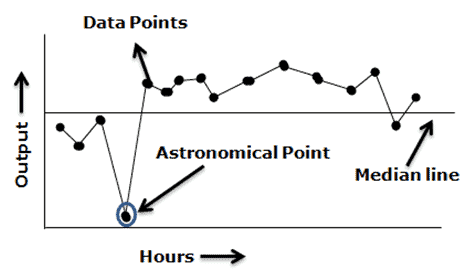

The Origin of Statistical Process Control and Shewhart's Contribution
Statistical Process Control (SPC) is a cornerstone in the field of quality control and has played a pivotal role in the evolution of manufacturing processes. The development of SPC is intrinsically linked to the work of Walter A. Shewhart in the early 20th century.
Early Developments in Quality Control
Before the 1920s, quality control in manufacturing primarily relied on post-production inspection. This method often resulted in inefficiencies, with high rates of defects and wastage.
Shewhart at Bell Telephone Laboratories
Walter A. Shewhart worked at Bell Telephone Laboratories during the 1920s. His role in research and development required consistent quality and reliability, leading to his groundbreaking work in process control.
Shewhart's Breakthrough: The Control Chart
In 1924, Shewhart developed the control chart, fundamentally changing how manufacturing processes were monitored:
- Control Chart: This tool allowed for real-time monitoring of manufacturing processes, helping to identify when a process was deviating due to external factors.
- Statistical Control: Shewhart introduced the concept of a process being in a state of statistical control, operating with inherent variability and free from external influences.
Shewhart's 1931 Book
Shewhart's book, "Economic Control of Quality of Manufactured Product," was published in 1931. It laid the theoretical foundation for SPC and introduced the Shewhart Cycle, later evolved into the PDCA (Plan-Do-Check-Act) cycle by W. Edwards Deming.
Shewhart's Contributions
Statistical Theory in Industrial Context
Shewhart was among the first to apply statistical methods practically in an industrial setting, revolutionizing quality control processes.
Quality Management Philosophy
Shewhart's work transcended technical tools, influencing a broader philosophy of continuous improvement and the role of management in quality control.
Legacy and Influence
His ideas were further developed by other quality management pioneers and continue to influence modern quality control and process improvement methodologies.
In summary, Walter A. Shewhart's contributions to quality control have been transformative, shifting industries towards a more proactive and statistically informed approach to quality management. His legacy endures in modern methodologies like Total Quality Management (TQM) and Six Sigma.
Shewhart Control Charts Overview
Shewhart control charts, named after Walter A. Shewhart, are essential tools in statistical process control (SPC) for monitoring process variability. These charts are designed for various types of data and process characteristics. Below is a list of the primary types of Shewhart control charts and their applications.
Types of Shewhart Control Charts
Attribute (Discrete) Control Charts:
P-Chart (Proportion Chart)
- Purpose: Monitors the proportion of defective items in a process.
- Data Type: Attribute data (e.g., defective or not defective).
NP-Chart (Number Defective Chart)
- Purpose: Similar to the P-chart but tracks the count of defective items instead of the proportion.
- Ideal For: Constant sample sizes.
C-Chart (Count Chart)
- Purpose: Monitors the count of defects per unit when the number of opportunities for defects is constant.
- Data Type: Nonconformities (defects) in a process.
U-Chart (Defects per Unit Chart)
- Purpose: Similar to the C-chart but used when the number of opportunities for defects varies.
- Application: Monitors defects per unit of measure (e.g., per item, per square meter).
Variable (Continuous) Control Charts
X̄bar and R Chart (Mean and Range Chart)
- Purpose: Monitors the process mean and variability for subgrouped samples.
- Data Type: Continuous data.
X̄bar and S Chart (Mean and Standard Deviation Chart)
- Purpose: Similar to the X̄ and R chart, but uses standard deviation to measure variability.
- Ideal For: Larger sample sizes (typically n > 10).
I-MR Chart (Individuals and Moving Range Chart)
- Purpose: Monitors individual observations and the moving range between two successive observations.
- Suitable For: Data collected individually, not in subgroups.
Conclusion
Each Shewhart chart type is tailored for specific data types and process monitoring needs. The choice of chart depends on the data's nature (continuous or attribute), the sample size, and the specific process aspect to be monitored (e.g., process mean, variability, proportion of defects). Understanding each chart's characteristics is key to effective process monitoring and quality control.
Additional Control Charts:
In Statistical Process Control (SPC), besides the widely known Shewhart charts (like X-bar and R charts), there are several specialized charts designed to monitor specific aspects of process behavior or to handle particular types of data. These specialty charts are often used in situations where traditional SPC charts may not provide the sensitivity or specificity required for complex or critical quality characteristics. Here are some of these specialty charts:
EWMA Chart (Exponentially Weighted Moving Average Chart)
- Purpose: Detects small shifts in the process mean.
- Feature: Places more weight on recent data points.
CUSUM Chart (Cumulative Sum Control Chart)
- Purpose: Focuses on the cumulative sum of deviations from the target.
- Sensitivity: To small and persistent shifts in the process level.
Multivariate Control Charts (T-squared - Hotelling's T²)
- Purpose: To monitor and control the stability and performance of a process based on multiple interrelated continuous variables, allowing for the simultaneous assessment of these variables to detect shifts in the process mean vector or changes in the covariance structure that single-variable charts might miss.
- Application: Extensively used in complex manufacturing processes, chemical production, and other industries where product quality and process stability depend on several interrelated measurements. It's particularly beneficial in situations requiring tight control over multiple dimensions or characteristics, ensuring comprehensive process monitoring and quality assurance.
EWMA (Exponentially Weighted Moving Average) Chart
- Purpose: Designed to detect small shifts in the process mean more effectively than traditional Shewhart charts by giving more weight to recent data points.
- Use Cases: Useful in processes where small shifts are critical to detect early, such as in chemical manufacturing or in high-precision engineering.
Multivariate Control Charts
- Purpose: Extend the concept of univariate control charts to monitor two or more related process variables simultaneously.
- Types: T-Squared (T²) Charts: Already mentioned, for monitoring the mean vector of multivariate processes. Principal Component Analysis (PCA) Based Charts: For reducing the dimensionality of the data while retaining most of the variation in the data set. MEWMA (Multivariate EWMA) Charts: Similar to the univariate EWMA but for multivariate data, useful for detecting small shifts in multivariate processes.
CUSUM (Cumulative Sum Control Chart)
- Purpose: Efficient at detecting small and medium shifts in the process mean. It cumulatively sums the deviations of individual process measurements from the target value or mean, enhancing the detection of small shifts.
Demerit or Quality Score Charts
- Purpose: Used to monitor nonconformities or defects that vary in severity by assigning different weights or scores to different types of defects.
- Use Cases: Applicable in industries where defects are not uniform, and some defects are more critical than others, such as automotive or electronics manufacturing.
Short Run SPC Charts
- Purpose: Designed for processes where the production runs are too short to establish traditional control limits, which require a large number of samples under a stable process.
- Use Cases: Useful in job-shop environments or industries where customized products are made in small quantities.
Attribute Control Charts for Rare Events
- Types: G and T Charts: These charts are useful for monitoring rare events, such as safety incidents or highly infrequent defects.
Process Capability Analysis Charts
- Purpose: Not exactly for controlling the process but for assessing the capability of a process to produce output within specified limits.
- Types: Cp, Cpk Charts: Provide a measure of a process's ability to produce output within specification limits, considering both the process variability and the process mean alignment with the target.
These specialty SPC charts offer tailored approaches for specific monitoring needs, ranging from handling multivariate data, detecting small shifts, to accommodating processes with variable sample sizes or short runs. The choice of chart depends on the nature of the data, the process characteristics, and the specific monitoring objectives.
Hands On Example
Coffee Shop Example Description
In this scenario, we explore a coffee shop's daily operations, focusing on various aspects like order processing times, customer satisfaction, and sales data. This coffee shop serves as a microcosm for understanding how small businesses operate and manage quality control, efficiency, and customer satisfaction. By collecting data on how long it takes to process orders, how satisfied customers are with their service, and how much revenue is generated, we can apply statistical methods to analyze and improve the coffee shop's performance. Objective
The primary aim is to teach users about Statistical Process Control (SPC) using a relatable and easily understood example. SPC is a method of quality control which employs statistical methods to monitor and control a process. This helps ensure the process operates at its fullest potential to produce conforming product with minimal waste (rework or scrap). SPC can identify when a process is behaving as expected or when it deviates significantly from this state, signaling that there might be a particular cause of variation that needs to be addressed.
Goals in the Coffee Shop Context
-
Understand Process Behavior: By analyzing order processing times, we can understand how efficiently the coffee shop operates on a daily basis. SPC charts help in identifying trends, shifts, or any outliers in the process.
-
Improve Customer Satisfaction: Monitoring customer feedback through SPC charts enables us to pinpoint areas of improvement. It can reveal whether changes in the process positively or negatively affect customer satisfaction.
-
Financial Performance Monitoring: Sales data analysis through SPC can highlight patterns, such as peak hours or days and the effectiveness of promotions, guiding better business decisions.
-
Quality Control: Through continuous monitoring of these metrics, the coffee shop can maintain high standards of service quality, ensuring that customers receive consistent and satisfactory service.
Teaching Approach
Using the coffee shop example, we can teach users how to apply SPC charts, such as X-bar and R charts for order processing times, P charts for customer satisfaction, and C charts for defect tracking (e.g., incorrect orders). This practical application helps users grasp the principles of SPC in a familiar setting, making the learning process more intuitive and engaging. By analyzing mock data generated and expanded upon with each "click," users learn how to interpret these charts, identify signals within the data, and make informed decisions to improve the process.
This hands-on approach demystifies statistical methods and provides valuable insights into how small changes can significantly impact a business's overall performance and customer satisfaction.
Mock Data
from pyspark.sql import SparkSession
from pyspark.sql.types import StructType, StructField, DateType, StringType, FloatType, BooleanType
from pyspark.sql.functions import lit, rand, randn
import datetime
# Function to generate data
def generate_data(existing_df, num_records=100):
"""
Generate simulated data for a coffee shop.
"""
# Generate timestamps
time_increments = np.random.normal(loc=5, scale=1, size=num_records).clip(min=1)
timestamps = [start_datetime + timedelta(minutes=np.sum(time_increments[:i])) for i in range(1, num_records + 1)]
# Order processing times (normally distributed around 5 minutes with a standard deviation of 2)
order_processing_times = np.random.normal(loc=5, scale=2, size=num_records).clip(min=0) # Ensure no negative times
order_processing_times = order_processing_times.tolist()
# Generate customer satisfaction levels
customer_satisfaction_choices = ['Very Satisfied', 'Satisfied', 'Neutral', 'Unsatisfied', 'Very Unsatisfied']
customer_satisfaction = np.random.choice(customer_satisfaction_choices, size=num_records).tolist()
# Generate sales amounts and round them
sales_amount = np.round(np.random.uniform(3, 20, size=num_records), 2)
sales_amount = sales_amount.tolist() # Convert to Python float list
# Generate correctness of orders
order_correct = np.random.choice([True, False], p=[0.9, 0.1], size=num_records)
order_correct = list(map(bool, order_correct))
# Prepare data for DataFrame creation
data = list(zip(timestamps, customer_satisfaction, sales_amount, order_correct, order_processing_times))
# Define schema
schema = StructType([
StructField("DateTime", TimestampType(), True),
StructField("Customer Satisfaction", StringType(), True),
StructField("Sales Amount ($)", FloatType(), True),
StructField("Order Correct", BooleanType(), True),
StructField("Order Processing Time (mins)", DoubleType(), True)
])
# Create a DataFrame from the generated data
new_data = spark.createDataFrame(data, schema=schema)
# If there's existing data, append the new data
if existing_df is not None and not existing_df.rdd.isEmpty():
updated_df = existing_df.union(new_data)
else:
updated_df = new_data
return updated_df
# Initialize Spark Session
spark = SparkSession.builder.appName("CoffeeShopDataGeneration").getOrCreate()
# Define the schema of the DataFrame
schema = StructType([
StructField("Date", DateType(), True),
StructField("Order Processing Time (mins)", FloatType(), True),
StructField("Customer Satisfaction", StringType(), True),
StructField("Sales Amount ($)", FloatType(), True),
StructField("Order Correct", StringType(), True)
])
# Create an empty DataFrame with the defined schema
# This is your starting point and can be used as input to the generate_data function
coffee_df = spark.createDataFrame(spark.sparkContext.emptyRDD(), schema)
# Example: Assuming existing_df is your existing PySpark DataFrame
coffee_df = generate_data(coffee_df, 100)
Line Chart
Below, I'll outline the code for generating three separate line charts in a Databricks notebook, one for each of the specified metrics: Order Processing Time (mins), Sales Amount ($), and Order Correct percentage over time. Each section of code is meant to be run in its own cell within a Databricks notebook.
1. Order Processing Time (mins)
This cell will calculate the average order processing time per day.
# Calculate average order processing time per day
order_processing_time_daily_avg = existing_df.groupBy("Date").avg("Order Processing Time (mins)").orderBy("Date")
# Display the DataFrame for plotting in Databricks
display(order_processing_time_daily_avg)
2. Sales Amount ($)
This cell will calculate the total sales amount per day.
# Calculate total sales amount per day
sales_amount_daily_sum = existing_df.groupBy("Date").sum("Sales Amount ($)").orderBy("Date")
# Display the DataFrame for plotting in Databricks
display(sales_amount_daily_sum)
3. Order Correct Percentage
For the Order Correct percentage, you'll first need to calculate the daily percentage of orders that were correct. This involves counting the number of correct orders per day, dividing by the total number of orders that day, and then multiplying by 100 to get a percentage.
from pyspark.sql.functions import sum as _sum, count as _count, col
# Calculate daily percentage of orders that were correct
order_correct_daily_percentage = existing_df.groupBy("Date").agg(
(_sum(col("Order Correct").cast("int")) / _count("*") * 100).alias("Order Correct Percentage")
).orderBy("Date")
# Display the DataFrame for plotting in Databricks
display(order_correct_daily_percentage)
Using Databricks Plotting Tool
After running each cell, you can use Databricks' built-in plotting tool to create line charts for each metric. Here's how to do it for each cell's output:
- For the output of each cell, you'll see a table with your data and a set of options for visualization at the bottom of the cell's output area.
- Select the 'Line' chart option from the visualization menu.
- Configure the chart:
- For the X-axis, select Date.
- For the Y-axis, choose the corresponding metric (e.g., the average for order processing time, the sum for sales amount, and the percentage for order correctness).
- Apply any additional customizations as needed, such as titles, axis labels, or line colors.
By following these instructions, you'll be able to visualize trends in order processing time, sales amount, and order accuracy over time, providing valuable insights into the coffee shop's daily operations and areas for potential improvement.
Run Chart
Creating run charts for the specified metrics involves a similar process to generating line charts, focusing on the same metrics but with an emphasis on identifying trends, shifts, or patterns over time. In a Databricks notebook, you'll use the same aggregation methods to prepare the data. A run chart essentially is a line chart with a focus on analyzing the data over time, so the preparation of data remains consistent. Below are the code snippets for each metric to be run in separate cells in a Databricks notebook.
Mean of Median
The choice between mean and median depends on the data's distribution and the presence of outliers. The mean, providing the arithmetic average, is best used for data that is symmetrically distributed with few outliers, as it considers all values. However, it can be misleading for skewed distributions or when outliers significantly impact the average. The median, identifying the middle value, is more robust in skewed distributions or when outliers are present, as it is less affected by extreme values. For small datasets, both can be informative, but for larger datasets, the median can provide a clearer picture of central tendency in the presence of skewness or outliers.
GO TO:
Median as Measure of Central Tendency
1. Order Processing Time (mins) (Median)
Calculate the average order processing time per day:
from pyspark.sql.functions import expr
# Calculate average order processing time per day
order_processing_time_daily_avg = existing_df.groupBy("Date").avg("Order Processing Time (mins)").orderBy("Date")
# Calculate the overall median of order processing times
median_order_processing_time = existing_df.approxQuantile("Order Processing Time (mins)", [0.5], 0)[0]
# Add the median as a constant column to the daily average DataFrame
order_processing_time_daily_avg = order_processing_time_daily_avg.withColumn("Median Order Processing Time", lit(median_order_processing_time))
# Display the DataFrame for plotting in Databricks as a run chart with median
display(order_processing_time_daily_avg)
2. Sales Amount ($) (Median)
Calculate the total sales amount per day:
# Calculate total sales amount per day
sales_amount_daily_sum = existing_df.groupBy("Date").sum("Sales Amount ($)").orderBy("Date")
# Calculate the overall median of sales amounts
median_sales_amount = existing_df.approxQuantile("Sales Amount ($)", [0.5], 0)[0]
# Add the median as a constant column to the daily sum DataFrame
sales_amount_daily_sum = sales_amount_daily_sum.withColumn("Median Sales Amount", lit(median_sales_amount))
# Display the DataFrame for plotting in Databricks as a run chart with median
display(sales_amount_daily_sum)
3. Order Correct Percentage (Median)
Calculate the daily percentage of orders that were correct:
from pyspark.sql.functions import sum as _sum, count as _count, col
# Calculate daily percentage of orders that were correct
order_correct_daily_percentage = existing_df.groupBy("Date").agg(
(_sum(col("Order Correct").cast("int")) / _count("*") * 100).alias("Order Correct Percentage")
).orderBy("Date")
# Calculate the overall median of the order correct percentage
median_order_correct_percentage = order_correct_daily_percentage.approxQuantile("Order Correct Percentage", [0.5], 0)[0]
# Add the median as a constant column to the daily percentage DataFrame
order_correct_daily_percentage = order_correct_daily_percentage.withColumn("Median Order Correct Percentage", lit(median_order_correct_percentage))
# Display the DataFrame for plotting in Databricks as a run chart with median
display(order_correct_daily_percentage)
Mean as Measure of Central Tendency
1. Order Processing Time (mins) (Mean)
Calculate the average order processing time per day:
from pyspark.sql.functions import avg, lit
# Calculate average order processing time per day
order_processing_time_daily_avg = existing_df.groupBy("Date").avg("Order Processing Time (mins)").orderBy("Date")
# Calculate the overall mean of order processing times
mean_order_processing_time = existing_df.agg(avg("Order Processing Time (mins)").alias("mean")).collect()[0]["mean"]
# Add the mean as a constant column to the daily average DataFrame
order_processing_time_daily_avg = order_processing_time_daily_avg.withColumn("Mean Order Processing Time", lit(mean_order_processing_time))
# Display the DataFrame for plotting in Databricks as a run chart with mean
display(order_processing_time_daily_avg)
2. Sales Amount ($) (Mean)
Calculate the total sales amount per day:
from pyspark.sql.functions import sum as _sum, count as _count, col
# Calculate daily percentage of orders that were correct
order_correct_daily_percentage = existing_df.groupBy("Date").agg(
(_sum(col("Order Correct").cast("int")) / _count("*") * 100).alias("Order Correct Percentage")
).orderBy("Date")
# Calculate the overall mean of the order correct percentage
mean_order_correct_percentage = order_correct_daily_percentage.approxQuantile("Order Correct Percentage", [0.5], 0)[0]
# Add the mean as a constant column to the daily percentage DataFrame
order_correct_daily_percentage = order_correct_daily_percentage.withColumn("Mean Order Correct Percentage", lit(mean_order_correct_percentage))
# Display the DataFrame for plotting in Databricks as a run chart with mean
display(order_correct_daily_percentage)
3. Order Correct Percentage (Mean)
Calculate the daily percentage of orders that were correct:
from pyspark.sql.functions import sum as _sum, count as _count, col
# Calculate daily percentage of orders that were correct
order_correct_daily_percentage = existing_df.groupBy("Date").agg(
(_sum(col("Order Correct").cast("int")) / _count("*") * 100).alias("Order Correct Percentage")
).orderBy("Date")
# Calculate the overall mean of the order correct percentage
mean_order_correct_percentage = order_correct_daily_percentage.agg(avg("Order Correct Percentage").alias("mean")).collect()[0]["mean"]
# Add the mean as a constant column to the daily percentage DataFrame
order_correct_daily_percentage = order_correct_daily_percentage.withColumn("Mean Order Correct Percentage", lit(mean_order_correct_percentage))
# Display the DataFrame for plotting in Databricks as a run chart with mean
display(order_correct_daily_percentage)
Plotting Run Charts in Databricks
After preparing the data as shown above, you can plot run charts using Databricks' plotting tool. The steps to visualize the data as run charts are the same as for line charts:
- After executing each cell, observe the table and visualization options below the output area.
- Choose the 'Line' chart visualization type. While run charts and line charts use the same type of visualization, the interpretation focuses on process stability and trends for run charts.
- Set up your axes:
- Use Date for the X-axis.
- For the Y-axis, select the appropriate metric (average for Order Processing Time, sum for Sales Amount, and percentage for Order Correct).
- Customize your chart as needed, focusing on clarity for analyzing trends and shifts over time.
These run charts will help you identify any patterns, trends, or shifts in the data, which are critical for process analysis and improvement. Pay attention to runs (sequences of points above or below the measure of central tendency), trends (continuous increase or decrease), and any shifts in the process level, as these can indicate changes in the coffee shop's operations.
Control Chart
Shewhart control charts are a fundamental tool in statistical process control (SPC) used to determine if a manufacturing or business process is in a state of control. For the metrics chosen for the coffee shop example, different types of control charts are appropriate based on the nature of the data (continuous vs. attribute) and its distribution. Here’s the best type of Shewhart control chart for each metric:
1. Order Processing Time (mins)
-
Metric Type: Continuous data.
-
Best Control Chart: The Individuals Control Chart (I-MR Chart) is most suitable for order processing time. This chart is ideal for continuous data that comes from a process where data points are collected individually in a sequential order. It helps in monitoring the process mean and variation over time.
2. Sales Amount ($)
-
Metric Type: Continuous data.
-
Best Control Chart: Similar to order processing time, the Individuals Control Chart (I-MR Chart) is also the best choice for monitoring sales amount. This metric represents continuous data that can vary significantly from one transaction to another, making the I-MR chart an excellent tool for identifying out-of-control signals that could indicate a need for process improvement.
3. Order Correct (Boolean: Yes/No)
-
Metric Type: Attribute data (binary outcomes).
-
Best Control Chart: The P-Chart (Proportion Chart) is the most appropriate for the "Order Correct" metric. This chart is used for attribute data where the data can be categorized into "conforming" and "non-conforming" (or, in this case, correct and incorrect orders) and the sample size can vary. It monitors the proportion of nonconforming units in a sample, providing insights into the process's stability in terms of order accuracy. Summary
I-MR Chart for continuous data like "Order Processing Time" and "Sales Amount," to monitor individual measurements and their variability.
P-Chart for attribute data like "Order Correct," to track the proportion of conforming vs. non-conforming items when the sample size may vary.
Each chart provides a visual means of identifying trends, shifts, or instances of the process being out of control, facilitating timely interventions and continuous process improvement.
I-MR Chart
Step 1: Aggregate Daily Average for "Order Processing Time (mins)"
from pyspark.sql.window import Window
from pyspark.sql.functions import lag, col, abs, avg, lit
# Assuming existing_df is your initial DataFrame
order_processing_time_daily_avg = existing_df.groupBy("Date").avg("Order Processing Time (mins)").orderBy("Date")
Step 2: Calculate Moving Range of Daily Averages
windowSpec = Window.orderBy("Date")
order_processing_time_daily_avg = order_processing_time_daily_avg.withColumn("PrevDayAvg", lag("avg(Order Processing Time (mins))", 1).over(windowSpec))
order_processing_time_daily_avg = order_processing_time_daily_avg.withColumn("MovingRange", abs(col("avg(Order Processing Time (mins))") - col("PrevDayAvg")))
Step 3: Calculate Mean Moving Range and Estimated Standard Deviation
# Calculate the mean of the Moving Range
mean_moving_range = order_processing_time_daily_avg.select(avg("MovingRange")).first()[0]
# Estimating standard deviation from the Moving Range (using d2 = 1.128 for n=2)
estimated_stddev = mean_moving_range / 1.128
Step 4: Calculate UCL and LCL for the I Chart
# Calculate mean of daily averages for the metric
mean_daily_avg = order_processing_time_daily_avg.select(avg("avg(Order Processing Time (mins))")).first()[0]
# Calculate UCL and LCL for I chart
ucl_i = mean_daily_avg + 3 * estimated_stddev
lcl_i = mean_daily_avg - 3 * estimated_stddev if mean_daily_avg - 3 * estimated_stddev > 0 else 0
order_processing_time_daily_avg = order_processing_time_daily_avg.withColumn("UCL_I", lit(ucl_i)).withColumn("LCL_I", lit(lcl_i))
Step 5: Calculate UCL for the MR Chart (LCL is typically 0)
# UCL for MR chart, using fixed multiplier for n=2
ucl_mr = mean_moving_range * 3.268
order_processing_time_daily_avg = order_processing_time_daily_avg.withColumn("UCL_MR", lit(ucl_mr)).withColumn("LCL_MR", lit(0))
Final DataFrame for Visualization
At this point, order_processing_time_daily_avg contains the following columns, ready for visualization in Databricks:
- Date
- avg(Order Processing Time (mins)) (Daily average of order processing time)
- MovingRange (Daily moving range of average order processing time)
- UCL_I and LCL_I (Upper and lower control limits for the I chart)
- UCL_MR (Upper control limit for the MR chart, with LCL_MR typically set to 0 or not used)
Instructions for Visualization in Databricks
-
For the I Chart: When visualizing, plot Date on the X-axis and avg(Order Processing Time (mins)), UCL_I, and LCL_I on the Y-axis to show the daily averages along with their control limits.
-
For the MR Chart: Plot Date on the X-axis and MovingRange, UCL_MR (and LCL_MR if applicable) on the Y-axis to visualize the moving range and its upper control limit.
This approach ensures you're visualizing the aggregated summary data with the appropriate statistical control limits to assess process stability and control effectively.
Control Charts
Overview >
Control charts are a fundamental tool in Statistical Process Control (SPC), used to monitor, control, and improve process performance over time. Here are the key benefits of using control charts:
-
Process Stability and Variability Reduction: Control charts enable the monitoring of process stability and the identification of unusual variations, aiding in efforts to reduce process variability and improve consistency.
-
Early Detection of Issues: They facilitate the early detection of trends, shifts, and patterns, allowing for timely corrective actions before defects or quality issues arise.
-
Informed Decision-making: By distinguishing between common cause and special cause variations, control charts provide a factual basis for decision-making, reducing the likelihood of unnecessary adjustments.
-
Cost Efficiency: The identification and reduction of process variability lead to lower waste, reduced rework, and fewer defects, thereby decreasing operational costs and increasing efficiency.
-
Continuous Improvement and Compliance: Control charts are instrumental in continuous improvement initiatives and compliance with quality standards, offering a visual tool for tracking performance, documenting process control efforts, and communicating with stakeholders.
Line Chart >
Run Chart >
Run Chart
A run chart is a line chart of data plotted over time. In other words, a run chart graphically depicts the process performance or data values in time order. Viewing data over time gives a more accurate conclusion rather than just summary statistics.

A run chart is also known as a trend chart or a time series plot. Usually, run charts are used in the measure phase of the DMAIC project and it helps to identify trends or shifts in the process and allows testing for randomness in the process. Difference between Run chart and control chart
Control charts are used to monitor the stability of the process. In other words, they measure any type of output variable over time. The goal is to see the results consistently fall within the control limits. On the control chart, both upper and control limits are defined. Typically, control limits are defined as three standard deviations from the mean. If the results fall within the control limits, then the process is stable; otherwise, it suggests that the process is not stable.
A run chart is similar to a control chart, but the key difference is it can reveal shifts and trends, not the process stability. Since the run chart does not have control limits, it cannot detect out-of-control conditions. However, it will graphically depict how the process is running. You can turn a run chart into a control chart by adding upper and lower control limits. A pattern or trend indicates the presence of special cause variation in the process.
Why use a run chart
A run chart is used to determine whether or not the central tendency of the process is changing. Following are a few reasons to use a run chart
- Easy to construct
- It does not require too many calculations or software’ for analysis.
- Easy to interpret the results
- Minimum statistical knowledge is sufficient to draw and interpret the chart
When to use run charts
- To visually depict how the process is performing
- Effectively track and communicate improvements (and determine success)
- To identify process variation and avoid unbiased actions
- Display outputs to look for stability or instability
Key components of Run Chart
- Time- series: the specific time period of the output (hours, days, weeks, months); plotted on the horizontal (X) axis
- Output: The data measurement from the completed process; plotted on the vertical (Y) axis
- Data points: output values plotted on the chart
- Median line: the line on the graph that shows the average of all the output measure.
Run chart interpretation rules
The following paragraphs are the run chart decision rules used to avoid inaccurate analysis and initiate appropriate improvement actions:

Shift: – Seven or eight values in succession above or below the median line is a shift. Do not consider the points that fall on the median line as they are not toward or against the shift. A shift indicates a dramatic change in the process.

Runs – Too many or too few runs in the data displayed on the chart. In other words, one or more consecutive points are all lying on the same side of the line. Ignore the points exactly on the line!

Clustering – Too few runs or groups of points in one or more areas of the plot. It indicates measurement or sampling problems.

Trend – Seven or more consecutive points are increasing or decreasing. A basic rule of thumb is when a run chart exhibits seven or eight points successively up or down, then a trend is clearly present in the data and needs process improvement. This rule does not care whether the consecutive points are above, below, or crossing the median.

Mixtures – Too many runs in a chart with absences of points near the median line.

Astronomical Point – Astronomical points occur when there is one value that is very different from the other data values on the chart. It would be a value that is highly unlikely to occur again and would appear as an outlier.
Counting Run Chart
A non-random pattern is signaled by too few or too many runs, or crossings of the median line. A run is a series of points in a row on one side of the median. In other words, one or more consecutive points are all lying on the same side of the line. If only chance is influencing the process being measured with a run chart, then there should be a regularity at which data points go above and below the median to satisfy this condition. Some points can fall exactly on the median line, which makes it hard to decide which run these points belong to. Hence, ignore if the value is exactly on the median line.
To apply the above-mentioned interpretation of the rules, we first need to identify the useful values/observations in the data set. This can be achieved by counting the number of runs and avoiding the values on the median line.
If you observe a greater or fewer number of runs than expected in the chart, that means there is a non-random pattern in the process. Swed and Eisenhart developed a chart in 1943 to determine the minimum and the maximum number of runs required for each data point to follow the random variation in the process. In other words, no special cause existed in the process.
Swed and Eisenhart chart

How to create run chart
- Determine the data to be measured
- Obtain the data – collect a minimum of 10 to 15 data points in a time sequence.
- Plot a graph with a time sequence in the horizontal x-axis (like, hours, days, weeks) and a vertical y-axis with measuring variables.
- Plot the data values in a time sequence
- Compute the mean/median and draw a horizontal line in the graph
- Analyze the graph, and observe the trends and patterns to detect special cause variation in the process
Data Classification
Determining the type of data you have and its level of measurement is crucial for statistical analysis and interpretation. Here's a structured approach to help you decide whether data is qualitative or quantitative, and then further classify it into nominal, ordinal, interval, or ratio levels. We'll also touch on identifying if quantitative data is continuous or discrete.
Step 1: Qualitative vs. Quantitative
- Qualitative Data (Categorical): This type of data represents categories or characteristics and can be used to classify subjects based on some attribute or quality. It does not involve numbers or quantities.
- Quantitative Data (Numerical): This type of data is numerical and can be measured or counted. It represents quantities or amounts.
Step 2: For Qualitative Data
- Nominal: These are categories without any natural order or ranking. Examples include gender, race, or the brand of a product. You can count them, but you cannot meaningfully order or subtract them.
- Ordinal: These categories have a natural order or ranking, but the intervals between the ranks may not be equal. Examples include survey responses like "satisfied," "neutral," "dissatisfied."
Step 3: For Quantitative Data
- Interval: Interval data is numeric, where the distance between two points is meaningful. However, it lacks a true zero point, meaning you cannot make statements about how many times higher one is than another. Examples include temperature in Celsius or Fahrenheit.
- Ratio: Ratio data has all the properties of interval data, with the addition of a true zero point. This allows for statements about multiplication/division. Examples include weight, height, and income.
Step 4: Continuous vs. Discrete (Quantitative Data)
- Discrete Data: This data can only take certain values (like whole numbers). It often counts something, such as the number of students in a class.
- Continuous Data: This data can take any value within a range. It often measures something, such as height, weight, or time.
Decision Logic Flow
Is the data numerical?
Yes: Go to step 2 (Quantitative Data).
No: It's Qualitative Data. Determine if it's Nominal or Ordinal.
Can the data take on any value in a range, or is it countable numbers?
Any value in a range: It's Continuous.
Countable numbers: It's Discrete.
(If Quantitative) Does the data have a true zero point?
Yes and distances are meaningful: Ratio.
Distances are meaningful but no true zero: Interval.
Conclusion
By following these steps, you can systematically determine the type and level of measurement of your data, which is essential for choosing the correct statistical methods for analysis. This logic helps ensure that your data analysis is appropriate and meaningful.
SPC Decision Tool Guide
Creating a decision tool or guide for navigating through the decision logic flow to determine the appropriate type of control chart for your data in the context of Statistical Process Control (SPC) is a great idea. Below is a simplified guide that incorporates the decision logic for data type classification and further links each to a corresponding type of control chart. This tool aims to streamline the process from data classification to the selection of the appropriate SPC chart.

1. Identify the Data Type and Nature
Qualitative (Categorical) Data: Typically relates to defectives. Move to Step 2.
Quantitative (Numerical) Data: Can relate to either defects or defectives. Move to Step 3.
2. For Qualitative Data (Defectives)
Nominal Data:
P-chart or NP-chart: Used for monitoring the proportion or number of defective units in a sample.
Ordinal Data: Less common, but if applicable, adapt a P-chart or U-chart based on context.
3. For Quantitative Data
Determine if the focus is on Defects or Defectives:
Attribute Data (Defectives):
P-chart or NP-chart: For defectives, when you're interested in the proportion or count of nonconforming units.
Attribute Data (Defects):
C-chart or U-chart: For defects, when monitoring the count of defects per unit or nonconformities per unit of measure.
Variable Data (Can be related to both, but often involves measurements indicative of defects):
I-MR Chart: For individual measurements, suitable when data points are independent and come from a variable process.
X̄-R Chart: For small sample sizes (2-10), when you want to monitor the process mean and variability.
X̄-S Chart: For larger sample sizes (>10), better for accurately capturing the distribution of data.
Decision Logic Flowchart
Start: Determine if your focus is on the quality of the unit (defective) or the quantity/quality of the issues (defects).
Qualitative Data (Defectives):
Nominal: ➜ P-chart or NP-chart
Ordinal: Context-based ➜ Adapt P-chart or U-chart
Quantitative Data:
For Defectives: ➜ P-chart or NP-chart
For Defects: ➜ C-chart or U-chart
Variable Data (Consider the nature of the measurement and focus):
➜ I-MR Chart, X̄-R Chart, or X̄-S Chart based on sample size and analysis needs.
Implementing the Guide
This guide can be implemented as a flowchart, a decision-making tool in software, or even a simple checklist. For digital implementation, interactive tools or apps can provide prompts based on user input, leading to the recommended control chart type, complete with explanations and examples. Conclusion
By following this guide, you can systematically determine the right type of control chart for your specific data type and scenario in statistical process control. Whether you're dealing with qualitative or quantitative data, discrete or continuous, there's a structured path to follow that ensures you select the most appropriate SPC tool for your needs.
Industry Adaptations of Defect Terminology for SPC
In non-manufacturing contexts, the terms "defects" and "defectives" might not always resonate or be applicable. Depending on the nature of the work or the industry, you might find it more relevant to use terms that reflect the quality or performance issues more closely related to your specific area. Here are some alternative terms that can be used in various non-manufacturing contexts:
-
Errors and Nonconformities: This terminology can be suitable for software development, data processing, and administrative tasks, where "errors" refer to specific mistakes or issues in a process or output, and "nonconformities" refer to instances that do not meet the set standards or expectations.
-
Issues and Incidents: In service industries, such as healthcare, hospitality, or IT services, "issues" can refer to specific problems encountered, while "incidents" might denote service disruptions or failure to meet service standards.
-
Variations and Non-compliances: In fields such as finance, legal, and regulatory compliance, "variations" can denote deviations from standard procedures or expected results, and "non-compliances" refer to failures to adhere to laws, regulations, or internal policies.
-
Anomalies and Exceptions: For data analysis, cybersecurity, and research, "anomalies" could be unusual patterns or outliers in data, while "exceptions" are cases that fall outside of normal operational parameters.
-
Faults and Failures: In engineering and IT, "faults" might be used to describe defects in design or function, whereas "failures" denote a complete breakdown or inability to perform a required function.
Incorporating these terms into the decision tool involves adjusting the language to better suit the context of your work while maintaining the underlying logic of the tool. For example:
Qualitative Data (Nonconformities/Incidents):
Nominal Data:
P-chart or NP-chart: Used for monitoring the proportion or number of nonconforming units or incidents in a sample.
Quantitative Data (Errors/Issues):
Attribute Data (Nonconformities/Incidents):
P-chart or NP-chart: For monitoring the proportion or count of nonconforming units or incidents.
Attribute Data (Errors/Issues):
C-chart or U-chart: For monitoring the count of issues or errors per unit or per unit of measure.
This adjusted terminology ensures the decision tool is relevant and understandable across various industries, enhancing its utility and applicability outside of traditional manufacturing environments.
T-squared (Hotelling's T²)T-squared (Hotelling's T²) method for Multivariate Control Charts
The T-squared (Hotelling's T²) method for Multivariate Control Charts is an extension of Shewhart control charts to monitor and control processes based on multiple interrelated quality variables. Unlike the traditional Shewhart charts that are univariate, focusing on a single quality characteristic at a time, the T-squared method allows for simultaneous monitoring of several related quality characteristics. This approach is particularly useful in situations where the quality of a process or product depends on more than one variable, and those variables may be correlated.
Overview of the T-squared Method:
The T-squared method is based on Hotelling's T² statistic, which is a multivariate equivalent of the univariate Z-score. It provides a way to test hypotheses about means of multivariate normal distributions. In the context of SPC, the T² statistic is used to determine if a set of multivariate measurements is statistically similar to a set of control measurements. The steps to develop a Multivariate Control Chart using the T-squared method are as follows:
-
Data Collection and Preparation:
- Collect sample data for the multivariate process. Each sample should include measurements for all variables being monitored.
- Ensure data is normalized if scales of measurements differ significantly among variables.
-
Calculate the Sample Mean and Covariance Matrix:
- Calculate the mean vector and the covariance matrix from the historical process data (the phase I dataset), which is assumed to be in control.
-
Compute the T-squared Statistic for New Observations:
- For a new sample (a vector of measurements for the monitored variables), calculate the T-squared statistic using the formula:
T2=(x−xˉ)′S−1(x−xˉ)
T2=(x−xˉ)′S−1(x−xˉ)
where:- xx is the vector of new observations,
- xˉxˉ is the mean vector of the in-control process,
- S−1S−1 is the inverse of the covariance matrix of the in-control process,
- T2T2 is the Hotelling's T-squared statistic.
- For a new sample (a vector of measurements for the monitored variables), calculate the T-squared statistic using the formula:
T2=(x−xˉ)′S−1(x−xˉ)
T2=(x−xˉ)′S−1(x−xˉ)
-
Determine Control Limits:
- The upper control limit (UCL) for the T-squared chart can be determined using the χ2χ2 (chi-square) distribution:
UCL=(p⋅(n−1)⋅(n+1))n⋅(n−p)⋅Fα,p,n−p
UCL=n⋅(n−p)(p⋅(n−1)⋅(n+1))⋅Fα,p,n−p
where:- pp is the number of variables,
- nn is the sample size,
- Fα,p,n−pFα,p,n−p is the F-distribution value at a chosen αα significance level, with degrees of freedom pp and n−pn−p.
- The upper control limit (UCL) for the T-squared chart can be determined using the χ2χ2 (chi-square) distribution:
UCL=(p⋅(n−1)⋅(n+1))n⋅(n−p)⋅Fα,p,n−p
UCL=n⋅(n−p)(p⋅(n−1)⋅(n+1))⋅Fα,p,n−p
-
Plot and Monitor the Chart:
- Plot the T-squared statistic for each new set of measurements against the UCL.
- Investigate any points that exceed the UCL as potential signals that the process may be out of control.
Application:
The T-squared method is widely used in industries where quality is defined by multiple interrelated variables, such as manufacturing complex components requiring tight tolerances on multiple dimensions, chemical process industries where product quality depends on a combination of factors, or any process where monitoring multiple variables simultaneously can provide a more comprehensive view of process stability and capability.
This approach offers a powerful tool for quality control in multivariate processes, enabling the detection of out-of-control conditions that might not be identified by monitoring variables individually. However, it requires a solid understanding of multivariate statistics and careful consideration of the relationships among the variables being monitored.
Glossory of Terms
Control Chart:
- A control chart is one of the primary techniques of statistical process control (SPC). The control chart is a graphical display of quality characteristics that have been measured or computed from a sample versus the sample number or time. The control chart was invented by Walter Shewhart at Bell Labs in 1920.
Statistical Process Control:
- Statistical Process Control (SPC) is a statistical method to measure, monitor, and control a process. In other words, SPC is a quality control method that employs statistical methods to measure, monitor, and control a process.
Common Cause:
- A cause of variation in the process is due to chance but not assignable to any factor. It is the variation that is inherent in the process. A process under the influence of a common cause will always be stable and predictable.
Assignable Cause (“Special Cause”):
- The variation in a process that is not due to chance can be identified and eliminated. A process under the influence of a special cause will not be stable and predictable.
Rational Sub-Grouping:
- Rational sub-grouping is the process of organizing the data into groups produced under the same conditions. Rational subgroups help in the estimation process of short-term variations. Thus, rational subgrouping is the basis for operating control charts in a successful manner. These variations later help us predict the long-term variations and their control limits, depending o the type of causes for the variation (special or common).